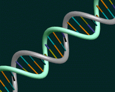
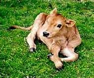

|
|
La copia es lo que vale
Clonación
Si hay un tema que la ciencia le arrebató a la ficción sin aviso ese tema es, sin duda, la clonación. Ninguno otro despierta tantas fantasías y temores. La sola mención de la palabra evoca una idea aún más perturbadora: clonación humana. Y nadie es capaz de evitar un estremecimiento si se le propone imaginar a su lado un clon propio. No es para menos.
Pero de qué estamos hablando. La clonación es simplemente y en términos generales la reproducción sin la intervención de sexos, es la reproducción a partir de un solo organismo. Las bacterias, sin ir más lejos, se reproducen de esta manera: en el proceso de división celular una bacteria genera dos hijas y la progenitora desaparece: se convirtió en dos. Estas dos son absolutamente idénticas entre sí y también lo son a la progenitora, por afuera y por adentro. Son un clon. Hasta acá no parece demasiado misterioso. Incluso muchas plantas utilizan –o permiten– el mismo método reproductivo y la intervención humana ha aprovechado esta propiedad para fijar características convenientes o ventajosas. Cada vez que plantamos una papa o cualquier otro tubérculo producimos una nueva generación de individuos (si cabe la palabra) idénticos. Un poco más elaborada pero igualmente antigua es la técnica del injerto que practicaban nuestras abuelas en el jardín de sus casas y que les permitía “eternizar” una plantita que les gustaba. La industria frutíola y la vitivinícola sacaron buen provecho del clonado vegetal. Hace ya tiempo la tecnología diseñó un método mucho más sofisticado –la micropropagación clonal– que consiste en tomar una célula cualquiera de una planta cualquiera y hacer de ella un individuo nuevo, idéntico, clon, gemelo, del individuo que donó –del cual se tomó– la célula. Seguimos sin conmovernos.
¿Y por qué nosotros, que nos reproducimos sexualmente como el resto de los animales, no generamos hijos idénticos a nosotros, sino tan sólo parecidos a nosotros (con un poco de suerte)? El secreto está en los genes. En el núcleo de cada una de nuestras células tenemos una moléculas llamadas ADN portadoras de las instrucciones que necesitamos para desarrollar nuestra vida. Cada instrucción se llama gen. Cada gen determina en última instancia una característica de nuestro cuerpo. Ser rubio, ser morocho; ser alto, ser petiso; ser dador universal o B Rh negativo. El problema es que cada una de nuestras células posee un juego doble de instrucciones –se llaman células diploides– y los duplicados, generalmente no son exactos. A la hora de reproducirnos el macho produce una célula especial que tiene un solo juego de instrucciones –una célula haploide–. Esa célula se llama espermatozoide y llega a tener un juego individual repartiendo en dos y al azar la dotación doble –diploide– que tenía inicialmente, como todas las demás células del cuerpo. La hembra hace otro tanto con una célula especial que lleva el nombre de óvulo. Ovulo y espermatozoide se juntan en una ceremonia muy divertida llamada fecundación, engendrando una célula que vuelve a poseer un juego doble de instrucciones y que por sucesivas divisiones celulares genera un nuevo individuo. El nuevo individuo termina poseyendo una dotación genética diferente a la de su padre, diferente a la de su madre y por lo tanto resulta diferente –aunque parecido– a ellos.
En la naturaleza, los animales también generamos clones aunque muy de vez en cuando. Se trata de los gemelos idénticos. Por algún motivo el huevo fertilizado se divide en dos huevos y cada uno genera un individuo. Ahora, un dato a tener en cuenta para un rato más adelante es el siguiente: los gemelos tradicionales son sincrónicos. Nacen el mismo día, cumplen el año el mismo día y consiguen su primera novia más o menos al mismo tiempo (lo cual veces genera unas confusiones bastante cómicas, pero eso sí no tiene nada que ver con esto). Salvo estas excepciones no existen clones naturales de animales.
Todavía queda un dato interesante sobre clonaciones naturales: nosotros mismos, como cualquier otro organismo, estamos hechos de lo que podríamos llamar un clon de células. Todas nuestras células, tanto las que forman la piel como las que forman el tejido nervioso, como todas las demás, provienen de la división al estilo de las bacterias (fisión binaria) a partir de una única célula inicial. Sin embargo las células de nuestros distintos tejidos son muy diferentes entre sí. Y nunca quedó muy claro si estas diferencias en aspecto y función se relacionaba con, o implicaba, cambios irreversibles en el núcleo, en la información genética.
En 1962 un señor llamado J.B.Gurdon desarrolló un ingenioso experimento: tomó el núcleo de una célula instestinal, totalmente diferenciada, de una rana adulta y la introdujo en el ovocito (el óvulo) de otra rana a la que previamente le había destruido el núcleo con todo su material genético, un ovocito enucleado. De la construcción salió un precioso renacuajo vivito y coleante como el que más, clon perfecto de la rana que había donado su célula intestinal. Este experimento, que constituye la primera clonación artificial en animales, demostró que aún las células adultas bien diferenciadas conservaban toda la información necesaria para la generación de un individuo entero, que una célula de hígado no sólo era capaz de generar más células de hígado –que es lo que había hecho siempre– sino también cualquier otro tipo de célula que un organismo nuevo y entero necesita.
Hacer lo mismo con mamíferos resultó mucho, muchísimo más difícil. Pero utilizando una técnica básicamente idéntica a la de Gurdon, Ian Wilmut y Keith Campbell del Instituto Roslin, en Escocia, lograron la clonación de ovejas (qué otra cosa se podría clonar en escocia). Veamos qué y cómo lo hicieron. En un primer experimento tomaron células un embrión de oveja de nueve días. Disgregaron las células del embrión, es decir las separaron sin dañarlas, y las pusieron a cultivar en frascos herméticos y con medios de cultivo controlados. Por otro lado tomaron el óvulo de una segunda oveja. En una operación muy delicada se sujeta el óvulo haciendo succión con una pipeta, y con una segunda pipeta de punta muy fina se pincha el óvulo y se aspira el material genético (los óvulos listos para ser fecundados no tienen el núcleo definido con membranas) Con una segunda inyección se introduce una célula entera tomada del cultivo. Un pequeño shock eléctrico disuelve la membrana que rodea la célula depositada dentro del ovocito lo cual funde ambos citoplasmas y crea un estado parecido al que genera la llegada de un espermatozoide. El resultado es un óvulo en una situación muy parecida a la anterior pero ahora, el desarrollo embrionario se ha desencadenado. Parece ser que el citoplasma del óvulo reprograma al genoma de la célula entrante para que se comporte como una célula embrionaria. La diferencia fundamental es que antes de la operación el óvulo era haploide y después de la operación resulta diploide, como un óvulo fecundado. Luego el huevo se transforma en un embrión. Este se implanta en una tercera oveja –la madre de alquiler o madre subrogante– que después de 6 meses de gestación pare un lindo corderito. Con este protocolo nacieron Megan y Morgan, que fueron los primeros mamíferos clónicos logrados artificialmente. Pero si lo miramos atentamente este experimento tiene varias limitaciones. M y M son gemelos que bien habrían podido resultar de un parto de gemelos común y silvestre; y además no son clones de ninguna otra oveja salvo de ellos mismos. No son clon de la madre subrogante que sólo prestó lugar en su útero. No son clon de la oveja donante de óvulos ya que no tienen genes comunes a ella. Y no son clones de la oveja que donó las células embrionarias ya que ese embrión tenía un 50% de componente genético de un macho que ni siquiera apareció en esta historia. Pero al menos el experimento permitió desarrollar y afinar la técnica de la manipulación celular necesaria para las clonaciones. |
| |
La voz del experto
En la Argentina hay una persona que es referente obligada si quiere hablar de clonación. Se trata de Lino Barañao, investigador principal del Conicet que estudió química en la facultad de Ciencias Exactas y Naturales de la UBA y realizó posgrados en el Instituto Nacional de Salud de Estados Unidos y en la Universidad del Estado de Pensylvania, donde se especializó en mecanismos de acción hormonal en cultivos de células ováricas. Barañao es además integrante de la Comisión Nacional de Etica Biomédica del Ministerio de Salud y de la Comisión Nacional de Tecnología Agropecuaria. Docente y consejero en la Facultad de Ciencias Exactas y Naturales también dirige el Laboratorio de Biotecnología Animal del Intituto de Biología y Medicina Experimental (IByME).
Dos años antes de que naciera Dolly se comunicó con Wilmut y Campbell para proponerle un trabajo conjunto, básicamente el mismo que después dio origen a la oveja más famosa. Los escoceses estuvieron encantados y juntos elaboraron un pedido de subsidio para llevar acabo los experimentos. La entidad responsable de otorgar el subsidio lo denegó.
Cuando se le pregunta por la clonación humana responde: Es inevitable que la sola mención de la clonación lleve a la gente a imaginarse miles de seres humanos idénticos, pero las pespectivas reales de aplicación de esas técnicas son muy diferentes. La clonación de seres humanos con fines reproductivos carece de justificación tanto desde el punto de vista ético y médico como desde lo económico, y menciono esto porque el último factor a veces suele tener más peso que los primeros. Hoy por hoy es tan riesgoso y tan ineficiente que intentar la clonación de un ser humano sería un acto criminal.
|
|
| |
|  |
| |
 |
| |
 |
| A la izquierda la pipeta de sujección. Desde la derecha la pipeta de aspiración e inyección. |
| |
 |
|
Y nació Dolly
En el experimento siguiente tomaron el material genético a clonar de células de la ubre de una oveja preñada de tres meses y medio. En ese estadio las células mamarias crecen y se reproducen con mucho vigor y eso facilita que hagan lo mismo en el cultivo cuando son transferidas. La infografía muestra el protocolo con el que nació Dolly, la oveja más famosa. Dolly sí es un engendro artificial que la naturaleza nunca podrá imitar. Es clon de otra oveja varios años mayor que ella, como hermanas gemelas pero desfasadas en el tiempo. A partir del anuncio del nacimiento en febrero de 1996 laboratorios de todo el mundo se lanzaron a clonar sus propios bichos. A cinco años de aquel hito tenemos un nuevo mamífero clonado cada mes; pero también tenemos otra cosa, el anuncio –en Italia y en Estados Unidos– de que se practicará la clonación humana.
No todo es color de rosa.
Así contado parece sencillo. Pero la clonación tiene todavía muchas dificultades. Hay muchos problemas y muchos misterios que resolver. Las técnicas empleadas son todavía muy ineficientes. Para que Dolly viese la luz fueron necesarios 250 experimentos idénticos. Esto significa 250 enucleaciones y 250 transferencias nucleares y 250 implantaciones en 250 madres subrogantes. En muchos de los experimentos el ovocito no se implanta, en otros muchos el feto muere antes de nacer, los que nacen frecuentemente poseen malformaciones que los condenan a poco tiempo de vida, y de los pocos que sobreviven a tantos avatares desastrosos la mayoría no resulta del todo normal. Dolly, en cambio, vive una vida normal y ya ha parido a Polly un corderito fruto de un apareamiento y una gestación normal.
La eficiencia promedio en todos los laboratorios del mundo para la clonación de mamíferos a partir de células de adulto sigue siendo muy baja. Sólo llegan a término entre un 1 y un 2 por ciento de los embriones, es decir menos de 2 individuos viables de cada 100 intentos. Sin contar que aún los casos considerados exitosos presentan diferencias con sus pares naturales. La edad, por ejemplo. Parece ser que la edad de un animal está registrada en los cromosomas que de alguna manera registran el paso del tiempo contando las divisiones celulares a las que fue sometido. Así, los cromosomas insertados en el óvulo elegido para la clonación ya vienen con varias divisiones encima. El tema no está resuelto. No se sabe si esto es muy pernicioso o si, en cambio, hasta puede ser beneficioso. Pero es una diferencia cierta de consecuencias no resueltas. De todos modos la pregunta obligada es cúal es el motivo de tanto empeño, ¿para qué queremos mamíferos clónicos? |
| Hello Dolly |

|
| |
 |
| Dolly y Polly |
| |
|  |
|
Una galaxia de posibilidades
Imaginemos una vaca lechera. No es una vaca cualquiera. Entre las proteínas de la leche que nuestra vaquita secreta de a litros por hora imaginemos una proteína de interés médico, por ejemplo, el factor IX humano de la coagulación sanguínea para el tratamiento de la hemofilia. Las vacas comunes no secretan factor IX humano en su leche, eso lo sabe cualquiera, pero la vaca que estamos imaginando sí: es una vaca transgénica. Nuestra vaquita va a tener sus terneritos y pronto tendremos un rebaño, cien rebaños de lecheras factoreras. Una producción galáctica de esta naturaleza transformaría una pequeña industria lechera en una fabulosa industria farmacéutica mucho más rentable y redituable que los sofisticados laboratorios farmacéuticos actuales (lo cual ya es decir mucho).
Construir una vaca transgénica que fabrique kilos y kilos de la proteína que se le pida no es imposible si nuestro rumiante es clónico. Cuando las células mamarias están en cultivo, multiplicándose por decenas de miles, se incuban en el medio con una mezcla de genes humanos de la proteína de interés farmacéutico unido a, por ejemplo, un gen de resistencia a un antibiótico. Luego se agrega el antibiótico al medio de cultivo por lo que morirán todas las células a excepción de aquellas que hayan incorporado el los genes añadidos. Con éstas células desarrollamos los clones.
Wilmut y Campbell desarrollaron un clónico-transgénico. Obviamente se trató de otra oveja, que nació en 1997 y secretaba con su leche la proteína humana de la coagulación y, por supuesto está patentada. Las vaquitas (y las ovejas) son ajenas.
Y en la Argentina en un proyecto biotecnológico en el que participó científicamente nuestro actual Ministro de Ciencia y Tecnología, Lino Barañao, se
obtuvieron en septiembre de 2002 las primeras terneras clonadas transgénicas
que contienen una secuencia codificante de la hormona de crecimiento humana (hGH) bajo control de un promotor
para beta caseína, o sea, para que salga con la leche. La producción en leche de la hGH para uso farmacológico en humanos demuestra que el conocimiento y la inteligencia son opciones rentables aún para pasíses agroganaderos como el nuestro.
Hay otros motivos de interés para el desarrollo de clónicos: los transplantes de órganos. Cada año mueren en el mundo miles de personas durante la espera de un órgano para transplante que finalmente no llega. Corazón, hígado, riñón, son algunos de los órganos que los cerdos podrían donar a los humanos si los cerdos fuesen cerdos transgénicos. El xenotransplante (así se llama el transplante de órganos entre especies diferentes) suele despertar cierta repugnancia. Pero cuando uno es un paciente en lista de espera para transplante, entonces el órgano es vida independientemente de su procedencia, y vida es vida. El rechazo de tejidos depende de las proteínas que los tejidos expresan, muestran. Y éstos dependen de las enzimas que los procesen. En fin, no es sencillo, pero es un hecho demostrado que si ciertos cerdos transgénicos a los que se les ha modificado el gen de la enzima que procesa los marcadores de superficie de sus órganos entonces sus transplantes son suficientemente tolerados por los seres humanos. No hace falta decir que tal transplante no sería gratis, ni tampoco barato.
|
| Pampita, hicimos una vaquita. |
| |
|
| Lino Barañao, científico y ministro. |
| |
| Replicantes nos atacan
El imaginario popular es sorprendentemente prolífico en torno a la clonación humana. La película Los niños de Brasil presentaba un pequeño ejército de Adolfitos Hitlers diseminados por el mundo clonados por el diabólico doctor Josef Menguele. En Blade Runner Harrison Ford aniquila los clones replicantes que quieren conquistar el mundo, pero finalmente se enamora (y se queda) con uno. (Con una).
Es infaltable quien tema la creación de ejércitos de esclavos arios dominando el mundo o se horrorice frente a la idea del clon propio en el ropero aguardando la necesidad de un transplante sin riesgo de rechazo. Es cierto que todas esas cosas pueden llegar a ser posibles según avanza el desarrollo tecnológico, y también lo son decenas, cientos, miles de posibilidades de situaciones más diabólicas y terroríficas aún que nada tienen que ver con la clonación como las que hemos vivido sin ir más lejos aquí en la Argentina durante la última dictadura. El modo de quedar a resguardo de tamañas penurias no reside en frenar el avance científico y tecnológico sino en fortalecer las democracias, ejercer efectivos controles sobre los gobernantes y elegirlos de entre los que se comprometen con la paz, la solidaridad y el respeto por los derechos humanos. |
|
| |
 |
|
Ama a tu clon como a ti mismo
¿Y qué decir de la terapéutica que podría llegar a brindar la clonación humana? La clave siempre se halla en la etapa de células en cultivo. Ya sea tomadas de un embrión como en el caso de Megan y Morgan, o de células adultas, como Dolly, cuando las células se encuentran en cultivo son pasibles de todo tipo de manipulación genética. Se pueden reparar genes defectuosos, incorporar genes ausentes, cambiar genes así por genes asá… cualquier cosa. Veamos algunas propuestas con un poco más de detalle.
Con el método de la clonación pueden crearse células indiferenciadas propias de un paciente. Una célula sana de la persona enferma se introduce en un óvulo humano enucleado y se genera un embrión humano de unas 100 células. En ese estadío no hay tejido nervioso desarrollado, ni mucho menos, por lo tanto es imposible que el embrión sienta dolor ni estímulo alguno del medio. Las células extraídas de ese embrión no tienen entidad demasiado diferente de las extraídas del paciente. Pero podrían utilizarse para tratar su propia dolencia ya que son clónicas propias y no generarán rechazo, en cambio pueden reparar o reemplazar un tejido dañado o ausente.
Hay mucha gente sensible a la manipulación de embriones debido a su potencial capacidad para devenir personas. Acá surge un conflicto que se manifestó en varios campos de discusión y que no está del todo resuelto.
Hay quien defiende o ataca la clonación humana hecha y derecha. Pero la discusión está contaminada de prejuicio y fantasía. Más de uno cree que podria comprar un clon de Pamela Anderson como quien compra una muñeca de goma, o clonar a Elbert Einstein para concluir la teoría del campo unificado. No terminan de caer en la cuenta de que en ambos casos obtendrían una criatura con toda una infancia y toda una vida por delante y que probablemente el parecido con sus clones famosos sería efímero y fortuito. La personalidad humana está determinada sólo en parte por los genes.
También hay quien aboga por la clonación humana como solución para parejas estériles. Cualquiera de estas operaciones valdría decenas de miles de dólares y constituiría un negocio millonario, pero enfrenta serios planteos éticos. Primero: hasta que todos los problemas técnicos y todas las incógnitas que quedan por resolver las consecuencias indeseadas de la clonación son inadmisibles cuando se trabaja con humanos. Y cuando la tecnología avance hasta plantear clonaciones con “riesgo cero” entonces todavía habrá que responder las preguntas para cada caso: ¿es lo mejor, es necesario?
El anuncio casi simultáneo de dos laboratorios, uno en Italia y otro en Estados Unidos de la inminencia de clonaciones humanas, absolutamente prematuras, cuando las técnicas alcanzadas esta todavía muy lejos de la praxis segura produjo reacciones de rechazo en todo el mundo. Científicos, legisladores, presidentes de todos los colores salieron a manifestar públicamente su rechazo y se esperan legislaciones prohibitivas que complicarán aún más el panorama científico. |
| |
Glosario
Clonación Reproducción de un organismo sin la intervención de sexos generando una copia genética del organismo original.
Clon (copia genética) Organismo idéntico genéticamente a otro.
Clon (colonia) Colonia de organismos idénticos genéticamente.
Cromosoma Estructura muy condensada formada por ADN y proteínas. Por extensión se llama cromosoma también a la fibra de ADN cuando se halla laxa e invisible al microscopio. En los cromosomas están los genes. El conjunto de cromosomas de un individuo se llama genoma.
Diploide Dotación doble de información genética. De cada gen hay dos copias en el genoma. Los duplicados no necesariamente son exactamente idénticos.
Gen Segmento de ADN que instruye la fabricación de una proteína.
Haploide Dotación unitaria de información genética. De cada gen hay una sola copia en el genoma.
Fisión binaria División de una célula en dos, llamadas células hijas, que son idénticas entre sí e idénticas a la célula original de la cual provienen.
Proteína Molécula estructural o funcional de los organismos. La instrucción para sistetizarla reside en los genes. Cada gen, una proteína.
Xenotransplante
Transplante de órganos entre especies diferentes
|
|
 |
| |
| |
|
|
| |
|
Artículo
publicado para el programa Con/Ciencia. Algunos derechos reservados.
Se permite su reproducción citando la fuente. Última actualización jul-09. Buenos Aires, Argentina. |
 |